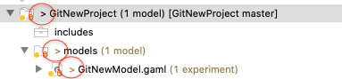

Using Git from GAMA to version and share models
To use Git in GAMA select Views -> Other... -> Show View -> Other...
In the Show view window that appears select Git -> Git Repositories and click on Open.
Creating Local Repository
With Git you can easily create local repositories to version your work locally. First, you have to create a GAMA project (e.g GitNewProject) that you want to share via your local repository.
After you have created your GAMA project, go to the Git Repository view and click on Create a new local Git repository.
In the following window specify the directory for the new repository (select the folder of the created GAMA project - GitNewProject -), throught the button Browse...

then hit the Create button.
Now your local repository is created, you can add models and files into your GAMA project. As you selected the folder of the new created GAMA Project, the repository will not be empty. So, it will be initialized with all the folders and files of the GAMA project. Note the changed icons: the project node will have a repository icon, the child nodes will have an icon with a question mark.
Before you can commit the files to your repository, you need to add them. Simply right click the shared project’s node and navigate to Team -> Add to Index.
After this operation, the question mark should change to a plus symbol.
To set certain folders or files to be ignored by Git, right click them and select Team -> Ignore. The ignored items will be stored in a file called .gitignore, which you should add to the repository.
Commit
Now you can modify files in your project, save changes made in your workspace to your repository and commit them. You can do commit the project by right clicking the project node and selecting Team -> Commit… from the context menu. In the Commit wizard, all files should be selected automatically. Enter a commit message and hit the Commit button.
If the commit was successful, the plus symbols will have turned into repository icons.
After changing files in your project, a “>” sign will appear right after the icon, telling you the status of these files is dirty. Any parent folder of this file will be marked as dirty as well.

If you want to commit the changes to your repository, right click the project (or the files you want to commit) and select Team -> Commit… . Enter a commit message and click Commit to commit the selected files to your repository.
Adding Files
To add a new file to the repository, you need to create it in your shared GAMA project first. Then, the new file will appear with a question mark.
Right click it and navigate to Team -> Add to Index. The question mark will turn into a plus symbol and the file will be tracked by Git, but it is not yet committed. In the next commit, the file will be added to the repository and the plus symbol will turn into a repository icon.

Reverting Changes
If you want to revert any changes, there are two options. You can compare each file you want to revert with the HEAD revision (or the index, or the previous version) and undo some or all changes done. Second, you can hard reset your project, causing any changes to be reverted.
Revert via Compare
Right click the file you want to revert and select Compare With -> HEAD Revision. This will open a comparison with the HEAD Revision, highlighting any changes done. You can revert several lines. select the line you want to revert and hit the Copy Current Change from Right to Left button (in the toolbar).
Revert via Reset
To reset all changes made to your project, right click the project node and navigate to Team -> Reset… . Select the branch you want to reset to (if you haven’t created any other branches, there will be just one). Click the reset button. All changes will be reset to this branch’s last commit. Be careful with this option as all last changes in your Gama Project will be lost.
Cloning Repositories
To checkout a remote project, you will have to clone its repository first. Open the GAMA Import wizard: right click the User models node -> Import... -> Other...
Select Git -> Projects from Git and click Next.
Select “Clone URI” and click Next.
Now you will have to enter the repository’s location. Entering the URI will automatically fill some fields. Complete any other required fields and hit Next (e.g, Authentification fields). If you use GitHub, you can copy the URI from the web page.
Select all branches you wish to clone and hit Next again.
Hit next, then choose a local storage location to save the repository in.
To import the projects, select the cloned repository and hit Next.
Select Import Existing Projects and hit Next.
In the following window, select all projects you want to import and click Finish.
The projects should now appear in the Models Explorer. (Note the repository symbol in the icons indicating that the projects are already shared.)

Creating Branches
To create a new branch in your repository, right click your project and navigate to Team -> Switch to -> New Branch… from the context menu. Select the branch you want to create a new branch from, hit New branch and enter a name for the new branch.
The new branch (NewBranch) should appear in the branch selection window.
You can see all the branches in the Git Repositories view.
If you would like to checkout the a branch, select it and click Checkout.
Merge
To merge one branch into another, right click the project node and navigate to Team -> Merge…
The merge will execute and a window will pop-up with the results. The possible results are Already-up-to-date, Fast-forward, Merged, Conflicting, Failed.

Note that a conflicting result will leave the merge process incomplete. You will have to resolve the conflicts and try again. When there are conflicting changes in the working project, the merge will fail.
Fetch and Pull
To update the remote branches when cloning remote repositories (Git creates copies of the branches as local branches and as remote branches) you will have to use Fetch. To perform a Fetch, select Team -> Fetch From… from the project’s context menu.
To update your local branches, you will have to perform a Merge operation after fetching.
Pull
Pull combines Fetch and Merge. Select Team -> Pull.
Push
Local changes made to your local branches can be pushed to remote repositories causing a merge from your branches into the branches of the remote repository (X pulls from Y is the same as Y pushes to X). The Push wizard is pretty much the same as the Fetch wizard.
History View
To show the repository history, right click it and select Team -> Show in History. This will open the History View, giving an overview of the commits and allowing you to perform several actions (creating branches/tags, revert, reset…).